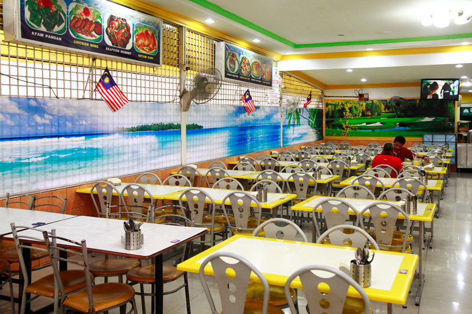
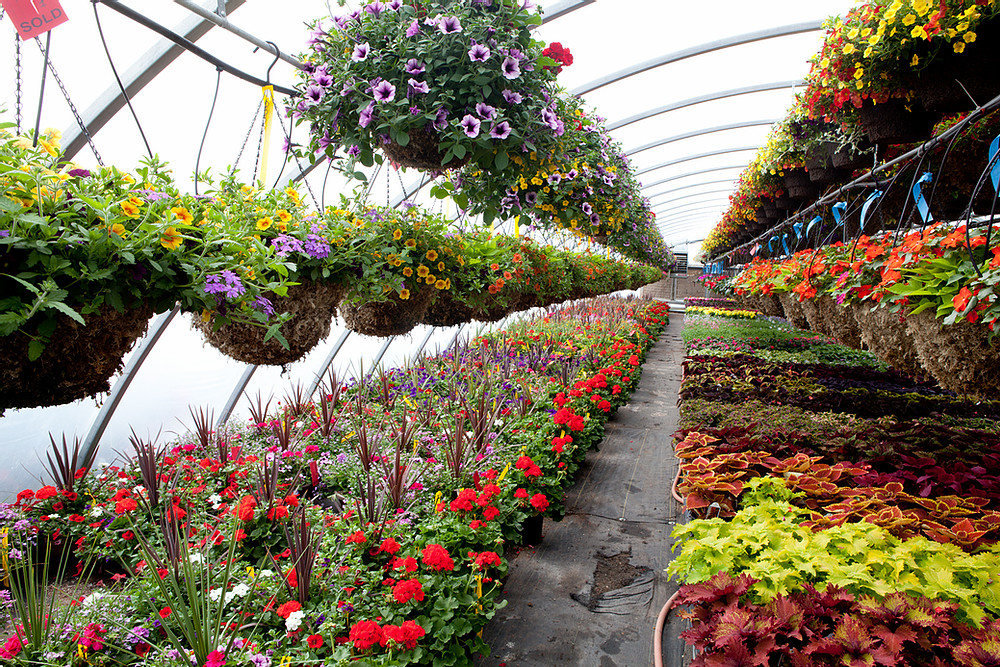
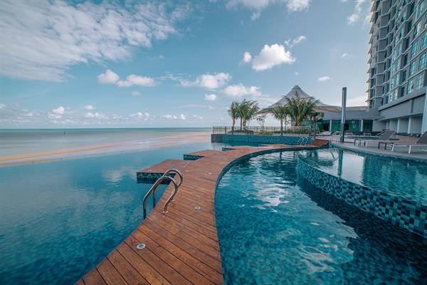

Before I countinuing my study to UiTM Kota Bharu, I have worked at many places and have a lot of experince while I am working. This experince have taught and help me understand a lot of thing in my life.
My first experience is I worked as waiter at a restaurant, it was a very challanging and tiring work. But working there help me to understand on how operation in any restaurant work.
Second, I once worked as gardener for a while. My job is to unload huge amount of pot from truck and plant decorative tree at Kuantan State Mosque.
Next, after finished my diploma on 2020, I worked as a pool lifeguard at 4 star hotel. It was a very fun job because I can swim in the pool almost everyday.